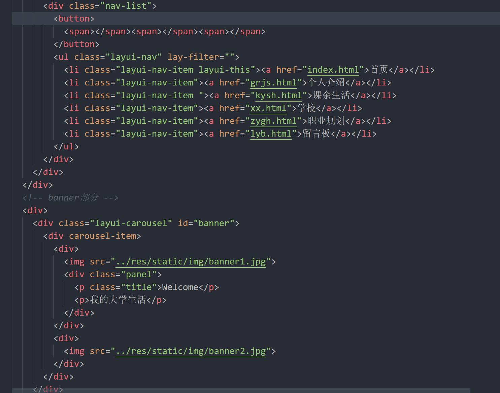
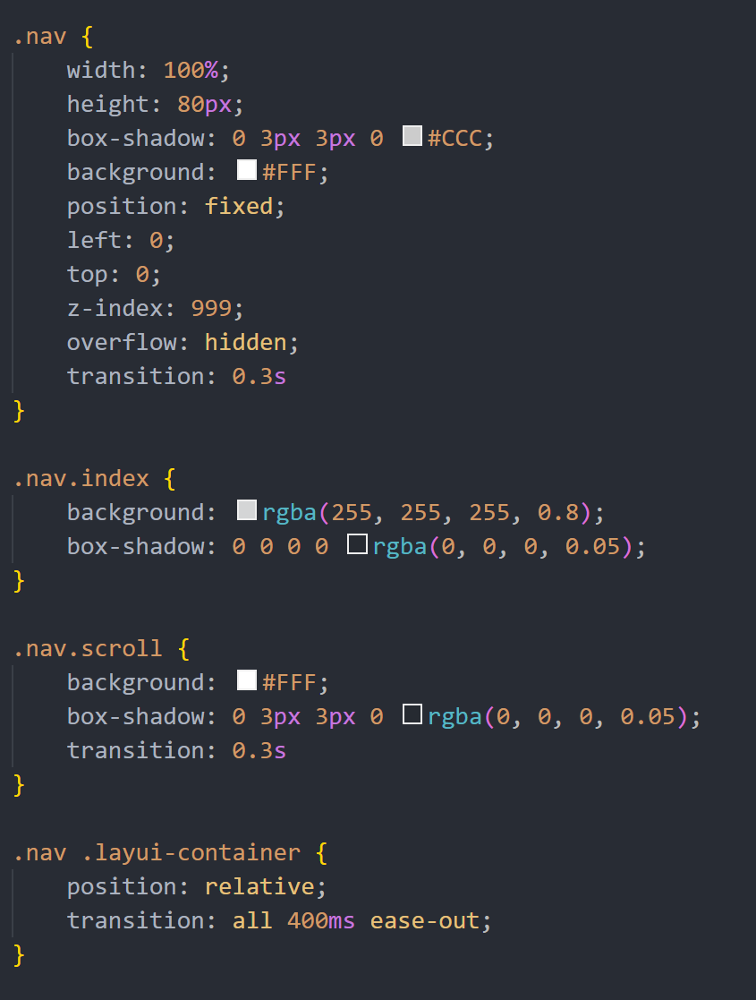
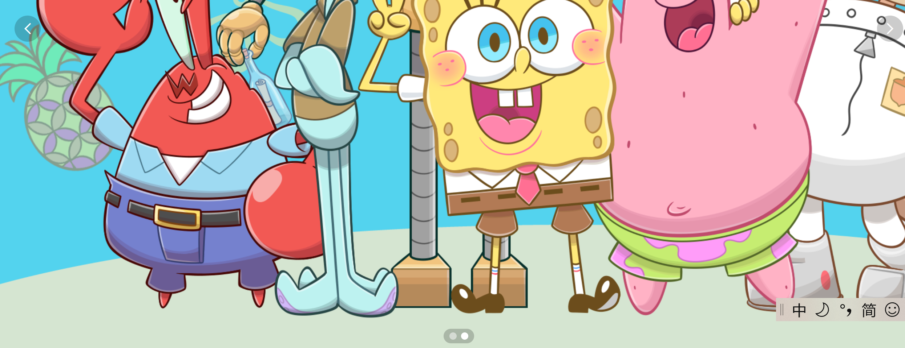
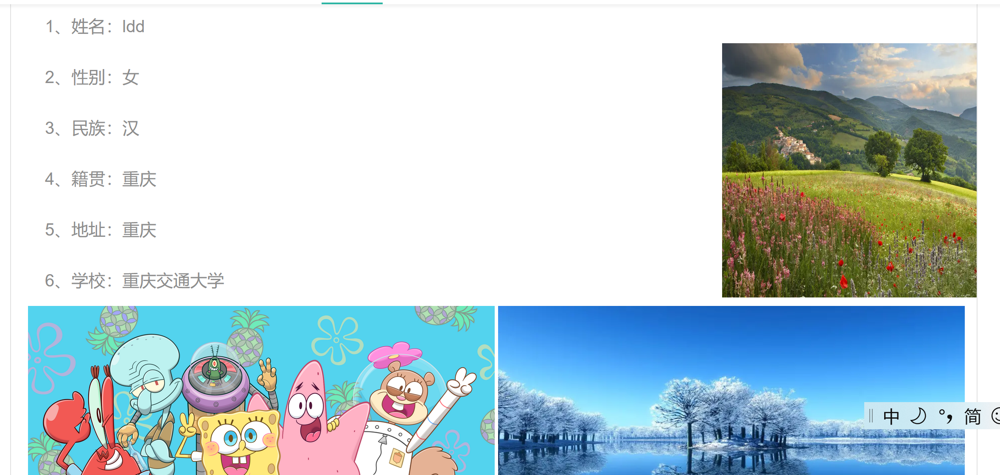
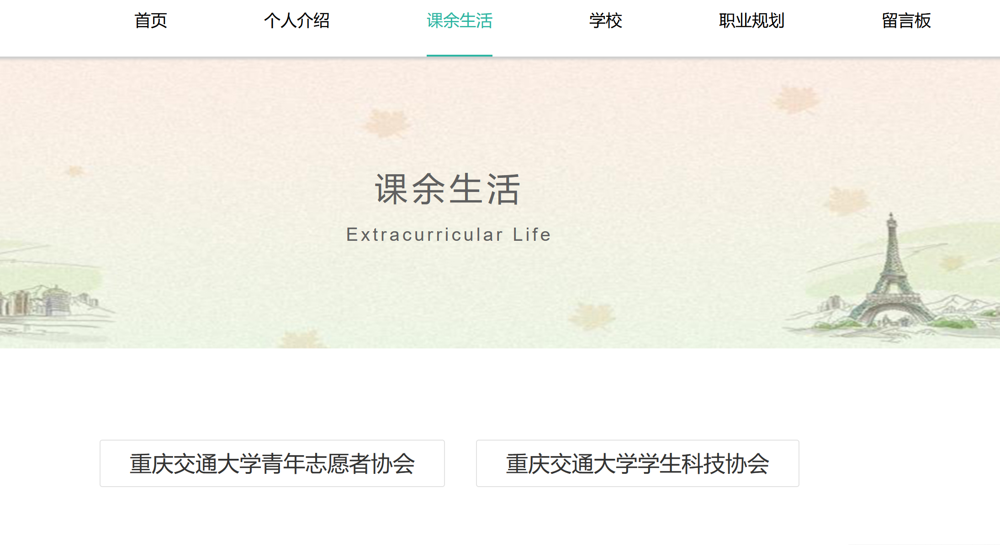
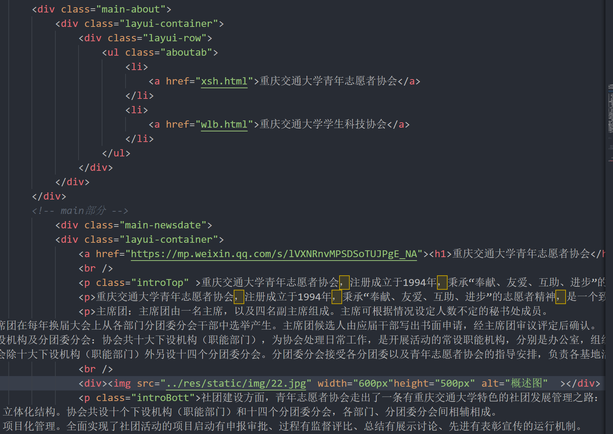

我根据课程结业要求，选择A主题，即静态网站,可使用你喜欢的任何CSS框架如BootStrap、MDB、tailwind等，页面不少于5个，最后一个页面放置结业报告的超链接。网站需部署到你喜欢的托管服务器上如github等。
撰写结业报告，要求如下：
A. 题目为《通信软件开发与应用》课程结业报告；
B. 报告需阐述：做的什么、开发过程、遇到的问题、如何解决、哪些未解决、总结；
C. 该报告需表现为HTML格式，从你上面的网站中可访问到。
我选择的主题为我的大学生活，主要介绍了我在读的学校——重庆交通大学
首先，在开始实施之前，我们要先对网页进行简单布局，要有导航，导航栏部分，根据导航栏划分为：首页，个人介绍，课余生活，学校，职业规划，以及简单留言板，最后对于导航栏分别对每个部分进行具体的代码编写和实现。
这是网页的主题所在，以及还有导航条的设置，它可以快速锁定主题所需要的内容，是网页开发极其重要的内容。导航条使用了一个< div >标签，其内容包括四个部分，包括< a >超链接，来实现网页的快速跳转，< button >按钮来实现点击，区块，用于放置各个导航超链接，< ul >标签定义无序列表。除此之外，我通过网络查找，使用了导航下划线的动态效果，页面效果如下
头部主题部分的代码为

以及它的css设置代码为

这一部分有图片轮播效果，图片切换效果

这一部分选用了图文结合的方式，对我自己做了简单的介绍，由于文字太少，所以配了几张图美化布局，但感觉还是不好看，知识欠缺，仍需学习

课余生活和学校生活都是从两个方面去介绍的，当点击这个按钮时，下方会出现对这个按钮中文字的介绍，按另一个是，介绍改变，实现跳转，网页图片如下

部分代码如下

问题1：首先是在做封面的时候，想要把封面设置为透明背景，且设置两个按钮及超链接，实现报告和网页的联通，通过查阅资料，解决了该问题，但感觉布局不太美观
问题2：实现图片的轮播效果，第一种是使用background: url()设置标签背景的方式，通过js对css样式进行修改实现图片轮播。第二种是使用css样式margin-left实现图片轮播具有滑动效果
问题3:实现文字的滚动效果:只需要把想要滚动的文字放的< marquee >标签里面就可以了。
问题4：在github上运行时部分网络图片无法加载成功。解决方法：把无法在github上加载成功的图片下载到本地，然后上传到github上，直接在在github上调用该图片，之后在github上运行时可以成功加载。
部分页面不太美观，文字设置不好看
本次课程中，我对于web网页前端有了相应的了解，对HTML、CSS、JavaScript还是只学了一点皮毛，并没有弄得很清楚，CSS看似简单，其实学好很不容易，比如CSS中的浮动，因为存在块元素和行辈元素，块元素因为其本身 特性，一个块元素标记他要占用一整行的空间，而一个行内元素他只能占用行内的一些空间，但是在 实际操作中，很多时候我们却要想将多个块元素排在同一行，或者将多个行内元素排在不同行，这时 候就可以使用浮动的方法来实现，浮动最主要做的就是这个，唯一要记住的一点就是做了浮动之后， 如果他的父元素是没有进行匡高的设定的话，是不是要进行清除浮动，防止下面的操作也是有浮动 的。这只是其中之一，还有很多地方都值得我去学习，去探索。